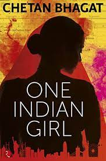
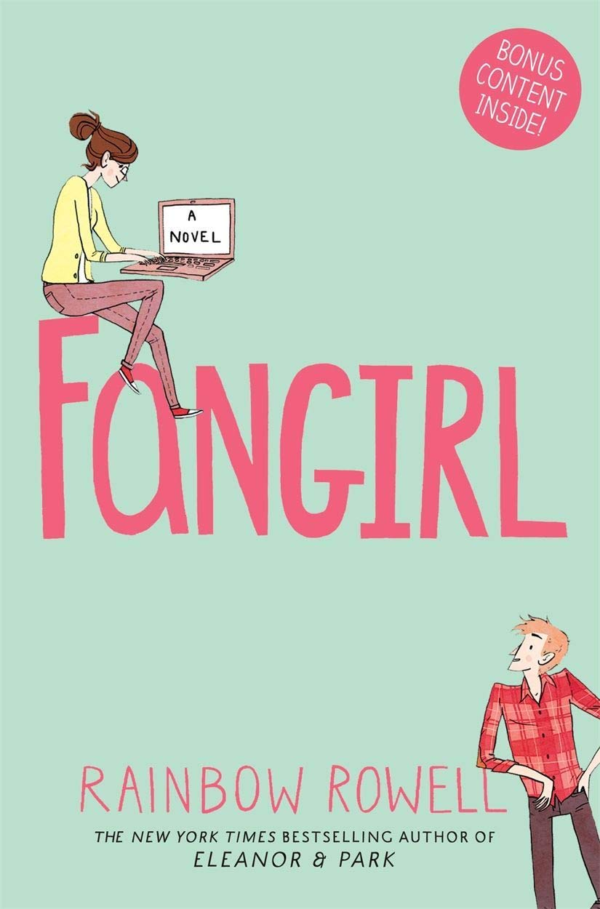
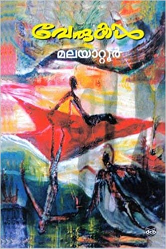

The Wings of Fire is an autobiography of former Indian President APJ Abdul Kalam. The book covers his life
before he became the President of India and commanded the armed forces. Renowned scientist and former Indian
President APJ Abdul Kalam from 2002 to 2007 is well known across India and abroad as well.
One Indian Girl

Author's Name-Chetan Bhagat
, One Indian Girl is a story of a girl called Radhika Mehta who is a hot-shot banker working in the
prestigious Investment Bank, Goldman Sachs. Radhika, who once was as nerdy as one can be, is now arranged to
get married to Brijesh Gulati and has just arrived for her destination wedding in Goa.
Fangirl

Author's Name-Rainbow Rowell
Fangirl is a story of two twin sisters, Wren and Cath, who have grown up without a mother and with a very
busy father. Cath is an introvert and very happy to live in her own internet and book world. She admires and
loves her sister, who also plays the role of her best friend.
വേരുകൾ

Author's Name-മലയാറ്റൂർ രാമകൃഷ്ണൻ
മലയാറ്റൂരിന്റെ ഏറ്റവും മികച്ച കൃതികളിലൊന്നായി വേരുകൾ പരക്കെ വിലയിരുത്തപ്പെടുന്നു. 1967-ലെ കേരള സാഹിത്യ
അക്കാദമി അവാർഡിന് ഈ കൃതി അർഹമായി.
The Da Vinci Code
Author's Name-Dan Brown
The Da Vinci Code follows symbologist Robert Langdon and cryptologist Sophie Neveu after a murder in the
Louvre Museum in Paris causes them to become involved in a battle between the Priory of Sion and Opus Dei
over the possibility of Jesus Christ and Mary Magdalene having had a child together.
Harry Potter and the Philosopher's Stone
Author's Name- J.K.Rowling
Adaptation of the first of J.K. Rowling's popular children's novels about Harry Potter, a boy who learns on
his eleventh birthday that he is the orphaned son of two powerful wizards and possesses unique magical
powers of his own.He is summoned from his life as an unwanted child to become a student at Hogwarts, an
English boarding school for wizards.
Five Point Someone
Author's Name-Chetan Bhagat
Synopsis: Chetan Bhagat's 'Five Point Someone' is a story about three friends and four years in IIT. Three
hostel mates — Alok, Hari and Ryan get off to a bad start in IIT— they screw up the frst class quiz. While
they try to make amends, things only get worse.
Half Girlfriend
Author's Name-Chetan Bhagat
Chetan Bhagat commented, "Half-Girlfriend, to me, is a unique Indian phenomenon where boys and girls are not
clear about their relationship status with each other. A boy may think he is more than friends with the
girl, but the girl is still not his girlfriend. Hence, I thought we needed a term like "half girlfriend".